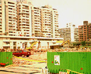

呂清夫 撰文

古人曾說「篳路藍縷，以處草莽」，近人則說「篳路藍縷，以啟山林」，今人或許應說「華車美食，以啟山林」，但是現在的「啟山林」可以說啟過頭了，蓋房子、開公路、造水庫，造成山林穿腸破肚，滿目瘡痍，從前印象中的美麗山林都便成了濫建崗，以致一遇颱風，便出現大水災、土石流等大地的大反撲。開發不是壞事，但不能濫墾濫建，不能蓋的山坡地也蓋得滿坑滿谷。不必以為風景幽雅的地方蓋上房子、開條公路，就可以擁有那一片幽雅，或者利用那片幽雅招來商機，房子一蓋上去，所有幽雅可能很快一掃而空。通往阿里山的公路本以為可以帶來旅客的人潮，結果適得其反，因為開車族車程縮短，於是多半當天來回，所以當地旅店的住客率反而大為減少。最要命的是登山火車居然有被廢掉的蠢動，世界三大高山鐵道之一的阿里山火車如果被廢，那簡直是殺阿里山的風景。我們的高速公路一條接一條，一段接一段地開挖。有人說，開公路有如對大自然開刀，如果資料不全、偵測不足、判斷錯誤都像人類的開刀一樣，將會置大自然於死地，而且大自然一死便永劫不復。於是很多土石流、大水災都因此而造成。我們的文化建設多半用在文化建築，教育投資也大半用在校舍建造。我們對於巨蛋的惡夢也永遠揮之不去，它處處想找一個地方下蛋，例如從前覬覦台北七號公園，後來因為交通等因素而遭到反對，最近則借屍還魂，想定古色古香的松山酒廠下蛋。至於世界第一高樓的大頭病也一直存在，從前有人倡議台北要蓋名叫「花開富貴」的摩天大樓，後來也因為周遭空地不成比例而作罷，但是最近還是死胎復活，搖身一變而為「台北國際金融中心」，並標榜全球第一高樓(508公尺)。華人似乎有一種空地恐懼症，一有空地就想蓋房子，而且常常要蓋遠東、全球最大的房子，有人說，這是一種「阿房宮情結」。蓋來蓋去，把子孫要用的土地都用光了，台北更被蓋成了國外媒體所謂的「醜陋之都」、「豬圈」、「不是人住的地方」。連文教單位都不例外，故宮又要擴建了，其僅有的散步空間行將滅絕。而台灣師大的校園更是每一寸可以蓋房子的地方都蓋滿了。在公園綠地最多的倫敦，它不但擁有著名的海德公園，它還有數百處花園廣場和幾百個公園，到處充滿綠意，野生植物更多達兩千餘種。只是這麼多的綠地也不是天上掉下來的，因為地上到處都有投機的建商、營造商，千方百計要在綠地上蓋房子。碰到這種情況，倫敦市民莫不鳴鼓而攻，並發生過多次的武裝抗爭或械鬥，甚至演變成流血事件，在倫敦史上，為保衛綠地而戰的記載真是斑斑可考。有些投機的建商、營造商為了創造利潤，於是到處尋找空地，到處製造水泥叢林，為了私人的利潤，往往棄整個社會於不顧，很多古蹟的拆除重建也是基於同樣的原因。法國建築評論家M•哈貢在其「我們明天住哪�堙v一書中，在感嘆水泥叢林之害時曾說：「在過去，我們曾自社會中去保護個人，並一直作過高貴的努力，但是同時，我們也不要忘了，要從個人手中去保護社會。」
原載1999.6.20.中央日報